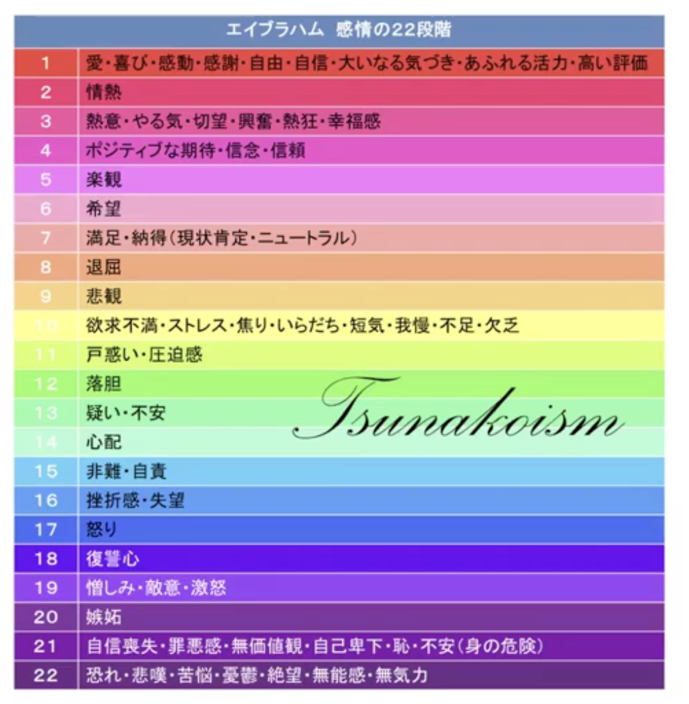

講義アーカイブ
講師：中内玲子
飛躍サロンとは？
経営者・リーダー向けに、宇宙の法則を使って現実を創造する方法を5ヶ月かけて伝授するオンラインサロンです。
「宇宙の法則がわかっても、地球でちゃんと現実創造できないと意味がない。ふわっとなっちゃうので。」
— 中内玲子
2年前のサロンは「天使や龍とつながる」という5次元寄りの内容でしたが、今回は経営者・リーダー向けに現実創造にフォーカスします。いかに成功するかという話よりも、自分自身を深く理解すること、無意識の管理ができるようになると、物事が自然に動き出すという考え方がベースです。
私たちの人生は川にボートで乗っているようなものです。流れに身を任せればいいのに、それを知らないと頑張って反対方向に漕いでしまい、余計に大変になります。この船に乗るにはいかに軽くして、流れに沿うかがポイントです。
なぜ5ヶ月必要なのか？
5ヶ月間かけることで、講義だけでなくLINEグループ上での波動調整も行います。グループ内で共鳴が起き、今まで感じなかったことを感じられるようになったり、スイッチが入ったりする人が出てきます。
- 経営者が多く、しかも稼いでいる人が多い：エネルギーを強めたい人は自然と強まりやすい
- 男女比が半々：普段脳ばかり使っている男性経営者も、華やかな女性たちの影響で五感が開きやすい
- メンバーの投稿に「いいね」するだけでも共鳴が起きます
5ヶ月間のカリキュラム
- 第1回： 波動とエネルギー管理（今回）
- 第2回： 意識レベル・魂レベルなど様々な「層」について（自分が今どこにいるか、周りの人がどこにいるかがわかると接し方が変わる）
- 第3回： 宿命・運命・指名・天命・過去生のギフトについて（自分の魂が求めていることがわかると、地球で何をすべきかがクリアになる）
- 第4〜5回： 参加者の状況に応じた内容
波動には「2つの軸」がある
「波動が高い」とよく言いますが、実は波動には「高さ」と「強さ」という2つの軸があります。

図解：波動の高さと強さの2軸構造
1. 波動の高さ = アクセスする現実の質
波動の高さは、どんな現実にアクセスするかを決めます。波動が低いと「なんかアンラッキーだな」「今日はついてないな」という現実に。波動が高いと「なんかいいことが起きる」「素敵なことが起きる」という現実にアクセスします。
同じものを見ても、波動の高さによって見え方が変わります：
| 場面 | 波動が低い時 | 波動が高い時 |
|---|---|---|
| 同じニュースを見る | 怒り・恐怖・心配を感じる | 「これはいいチャンスだ」と感じる |
| 同じ商店街を歩く | いつもの景色しか見えない | 「今までこの店あったっけ？」と新しい発見がある |
| 同じレストランへ行く | 店員がムッとしてる、ここ汚いな | 綺麗な絵が飾ってあるな、素敵な雰囲気だな |
要は、同じ環境にいても波動の高さによってアクセスするものが違う。パラレルワールドが違うようなものです。
2. 波動の強さ = 影響力・実現力
強さは影響力であり、物事を実現する力です。お金はエネルギーなので、エネルギーが強い人は自然とお金を稼げたりします。
- 高さは感情状態なのでアップダウンがあります（朝は気分よくても、嫌なことがあればガンと下がる）。
- 強さは変動が少ないです（強い人はずっと強い、弱い人はずっと弱い）。
すごくいい人で素晴らしいのに、望んでいることがなかなか実現しない → これは強さの問題
すごく稼いでいるけど波動が高いとは限らない → 稼げているのは強いから
高さ × 強さ の4パターン
| パターン | 例 | 特徴 |
|---|---|---|
| 高くて強い | ⚾ 大谷翔平選手 | 穏やかで余裕がある、影響力大、みんなに希望を与える、攻撃性がない |
| 高くて弱い | 🧘 質素なお坊さん | すごく素晴らしく愛に溢れているが、世の中への影響力は小さい |
| 低くて強い | 😈 ヤ〇ザ | 人に恐怖・不安を与えるが、財力がある、お金を巻き取れる |
| 低くて弱い | 😤 近所の文句おじさん | ブツブツ文句を言い散らかしているが、世の中に影響力はない |
💡 波動が高い人の見分け方
波動が高い状態とは、波が細かく穏やかに振動している状態です。低いほど波が荒いです。
- 穏やかで余裕がある
- 見た目が明るい
- 攻撃性がない
※「ハイテンション」ではなく「穏やか・平和」が高い波動の証です。仏様のような穏やかさです。
💡 周波数と波動の違い
周波数は「雰囲気」のようなものです。波動の高さ・強さに加えて、その人のカラー（雰囲気）がまとわりついたものが周波数です。周波数が似ているとは、雰囲気が似ているということです。採用の際は周波数が似ている人を選ばないとゴタゴタが絶えません。
波動を高める・強める方法

資料：エイブラハムの感情の22段階
🔺 高さを上げるには
とにかく気分を良くすること。これが一番手っ取り早いです。
ただし、「ポジティブになれば波動が高くなる」という単純な話でもありません。心配や不安、嫉妬といった感情は、今の感情だけでなく幼少期の積み重ねや過去世のカルマが重なっている場合があります。
そのため、単純に「ハッピーにしよう」と思っても一時的にはなりますが、また戻ってしまいます。大事なのは、まず自分の幼少期やカルマを「知る」こと。これを知るだけで70%解除されます。
💪 強さを上げるには
- 自分を信じる
- 決断を早くする
- 決断が遅い人はエネルギーがちょっと足りない
- 練習方法：レストランに行ったら3秒で決める
- 小さいことですぐ「どうしようかな」と言わない
- 決めたことを最後までやり抜く
- 自分との約束を守る
- やり抜いたという自信がつく → 成功体験の繰り返し
- コンフォートゾーンを少しずつ超える
- 必ずしも肉体的なこと（バンジージャンプ、滝に打たれる）でなくてもいい
- 精神的なコンフォートゾーンを超えることも効果的（例：話すのが苦手だったReiko先生がYouTubeを撮ってみた、旅行に行く一歩を踏み出すなど）
※注意：男性と女性では鍛え方が違う！
男性： サバイバル的なことで鍛錬するとギュッとキュッと強くなる。
女性： 元々丹田が大きいが、世の中の縛りでギューっと小さくなっている。さらに肉体的鍛錬をするともっとギューとなってしまう。女性はリラックス・解放することでワーっと大きくなる。
エネルギー管理について
私たちが持っているエネルギーは有限です（キャパシティが決まっています）。新しいことを始める（飛躍する）には、スペースを空ける必要があります。

図解：自分につながっているエネルギー（家族、仕事、人間関係など）
まずは「断捨離」から
物質的なモノ（服、靴、古い布団など）や、不要なデジタルデータ（メール、LINEグループ）は全て自分とエネルギーで繋がっています。これらを整理することで、新しいエネルギーが入ってくるスペースができます。新しいプロジェクトをやる時は、まず物質的な断捨離から始めましょう。
経営者のエネルギーの回し方
経営はエネルギーの「渦」を回すイメージです。自分が中心で回し、やがて自分が抜けても回るようにします。
⚠️ 新規事業の注意点
- 同分野の拡大： 同じ渦で回るので比較的容易（例：学校を1件→2件→3件）。
- 異分野への進出： 全く別の渦になるため、既存の渦が安定してからでないと危険（例：教育関係の人がラーメン屋を始める）。
最近みんないろんな事業を増やしているけど、大丈夫かなとちょっと心配になる。この渦の法則を分かると、増やした時にどう回したらいいかが分かる。
周波数を合わせて願いを叶える
望んでいることに手が届かないのは、今の自分と目標の周波数が違うからです。
🎯 最速の方法
普通に考えると「ここに行きたい」と思ったら、どうやってたどり着くかいろいろ考えます。でも自分で決めたルートでしか与えられません。私たちの頭よりも宇宙のほうがすごいです。
ガムシャラに頑張るのではなく、望んでいるものの周波数に自分を合わせる。そして「どうやって」は宇宙に任せる。すると全く想像もしない形で、プレゼントのように降りてきます。
Reiko先生の実例
- 姫周波数チャレンジ： 「姫周波数」をテーマに姫チックなことをしていたら、デビュー夫人の誕生会に招待され、モナコに行かなくても恵比寿で皇室級の方々に会えた。
- インドで王様の隣に： 席順は王様の隣の隣だったが、「私は姫だから王様の隣に決まっている」と確信していたら、隣の人が欠席になり、王様の隣に座れた。
- LAの学校： 「条件が全て揃ったものがあればやります」と宇宙にオーダーしたら、宝くじ並みに難しい条件の土地（日本人が多いトーランス、即入居可）が向こうからやってきた。
🧠 思考では周波数は動かない
頭でイメージしても何も響きません。大事なのは「体（感覚）」で感じることです。
第六感（インスピレーション）も五感がしっかり働いていないと降りてきません。思考ではなく、いかに五感がビンビン働いているかが鍵です。
具体的な周波数の合わせ方：
- なりたい姿の服を着る（服の色や質も周波数）
- GPTで理想の自分の画像を作る（宝塚の主役になった自分の合成写真など）
- 携帯のホームスクリーンを理想の姿にする
- 稼ぎたいなら稼いでいる人と一緒にいる、その人の行動を真似る
- 恋人が欲しいならラブラブな動画を見る、ラブラブなカップルと過ごす
Q&A ハイライト
安さんの質問
Q： エネルギーのキャパシティってどうやって把握すればいいんですか？自分が今無理しているかどうかもあまり感じていないので…
A： お金の流れを見ると自分のキャパがわかります。入ってきたお金をホールドできず、すぐ無駄なことに使って流れてしまう場合はキャパオーバーの可能性があります。ただ、繋がりが多すぎてキャパオーバーに感じているだけの場合もあるので、必要ないものをクリアにしたら「意外とまだまだいけるじゃん」となることもあります。
さやかさんの質問
Q： 周波数ってどうやって合わせていけばいいんですか？
A： 宝塚に受かった子たちは、試験の前から「自分は受かって当たり前」「もう宝塚の一員だ」という態度でいたそうです。
思考でイメージしても周波数は動きません。「体」で感じることが大事です。GPTで自分の写真を加工して待ち受けにするなど、視覚から入るのも効果的です。
たつみさんの質問
Q： 周りにどう見られるか（妬み、嫉妬、敵を作らないか）が気になって、好きな服や格好ができない…
A： 周りの人はあなたの幸せに責任を持ってくれません。気にするエネルギーがもったいないです。嫉妬を恐れるのは過去世のカルマが関係していることもありますが、それに気づくだけでも70%くらい解放されます。
やすさんの質問（医師）
Q： 周波数が合わない患者さんに対応しなければならない時、どう考えればいいですか？
A： スタッフは周波数の合う人を採用すべきですが、お客様は選べません。「カラーが違うんだな」と割り切って仕事として対応しましょう。
また、クリニック自体の「軸（周波数）」をクリアに整える（ロゴや内装を統一するなど）と、合わない人は自然と離れ、合う人が集まるようになります。整う過程で必ず人は離れますが、それは良いことです。
すいちゃんの相談
Q： 以前は赤を身につけていてパワーがあったが、今は目立たないよう地味にしている。また赤を身につけるのは勇気がいるが、どうバランスを取ればいい？
A：
めちゃくちゃユーモアがあるのに、外見が普通すぎてもったいないです。新しい仕事を始めるなら、あなたらしさを最初に出してからやった方が、それに合った人が集まります。服の色や質は全部周波数です。
→ 特別課題：次回までに本当になりたい姿の服を着てくること。
サロンメンバーへの課題
- 自己紹介をLINEグループに投稿（ニックネーム・職業・居住地）
- 断捨離チャレンジ：1日1個、何かを捨てる
- 他の方の投稿に「いいね」で参加する（共鳴を起こす）